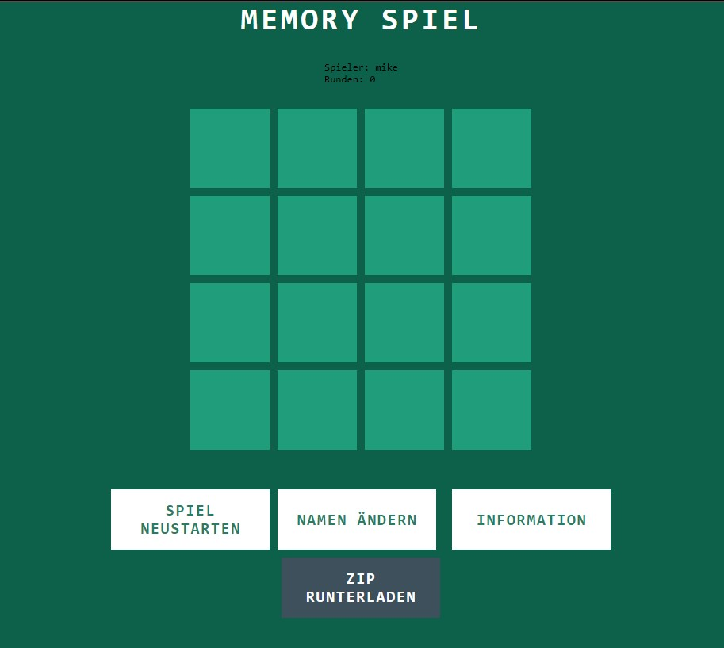
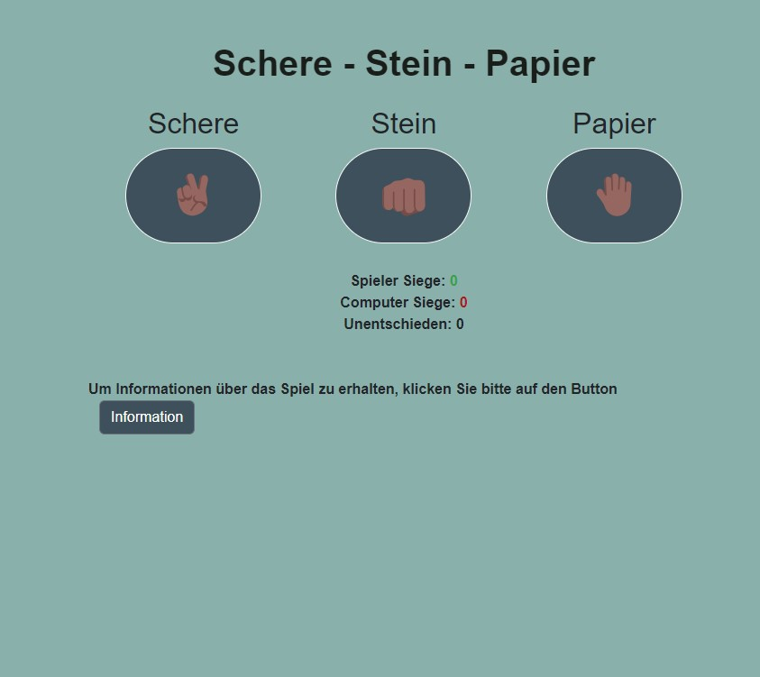
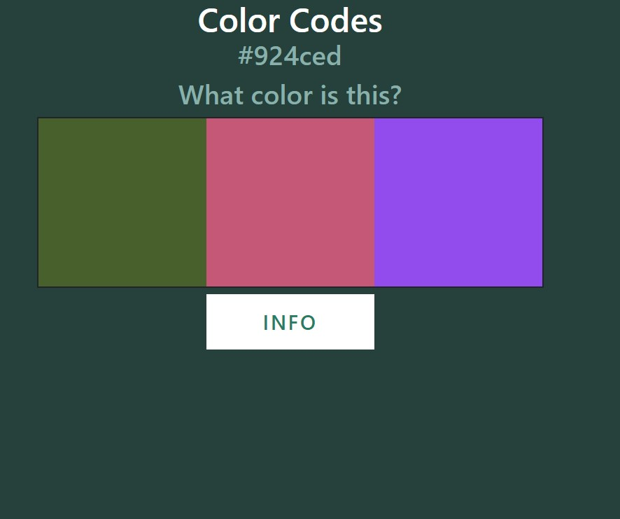

Wusstest du? Das Spiel Memory wurde 1959 von einem Schweizer
Schriftsteller und Spielentwickler namens William Hurter erfunden.
Es gilt heute als eines der besten Spiele zur Verbesserung des
Gedächtnisses und der Konzentrationsfähigkeit!"
Schere Stein Papier

Wusstest du?
Schere, Stein, Papier hat seine Wurzeln im alten China und war
ursprünglich als 'Shoushiling' bekannt. Das Spiel wurde später in
Japan populär, wo es als 'Janken' bezeichnet wird, bevor es
weltweit bekannt wurde!"
Color Codes

Wusstest du? "Color Code", auch bekannt als "Mastermind",
wurde 1970 von Mordecai Meirowitz, einem israelischen
Postangestellten, erfunden. Das Spiel wurde von vielen Verlagen
weltweit übernommen und ist heute ein Klassiker unter den Logik-
und Deduktionsspielen. Ein erstaunliches Detail ist, dass es über
5.755 mögliche Kombinationen gibt, um den Farbcode zu knacken, was
das Spiel zu einer echten Herausforderung für Denker und Strategen
macht!
Number Guessing
Wusstest du? Das Spiel Number Guessing hat eine
mathematische Basis in der Binären Suche, einem Algorithmus, der
oft in der Informatik verwendet wird. Wenn man die Strategie
optimal anwendet, kann man in einem Zahlenbereich von 1 bis 100
die richtige Zahl immer in maximal 7 Versuchen erraten. Dies liegt
daran, dass bei jedem Versuch die Hälfte der verbleibenden
Möglichkeiten ausgeschlossen wird, was die Anzahl der
verbleibenden möglichen Zahlen exponentiell reduziert!